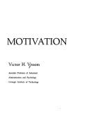

Work and Motivation
Book·Victor H. Vroom, 1964·工作与激励

Vroom proposes expectancy theory: motivation depends on a person's judgment about whether effort will lead to outcomes and whether those outcomes are valuable.
- Author
- Victor H. Vroom
- Year
- 1964
- Difficulty
- Intermediate
- Kind
- Primary text
- Schools
- Field Theory and Group Dynamics
- Core theories
- Expectancy Theory of Work Motivation
Editions
- English edition Work and Motivation Victor H. Vroom · Jossey-Bass reprint · 1995 Open Library ↗